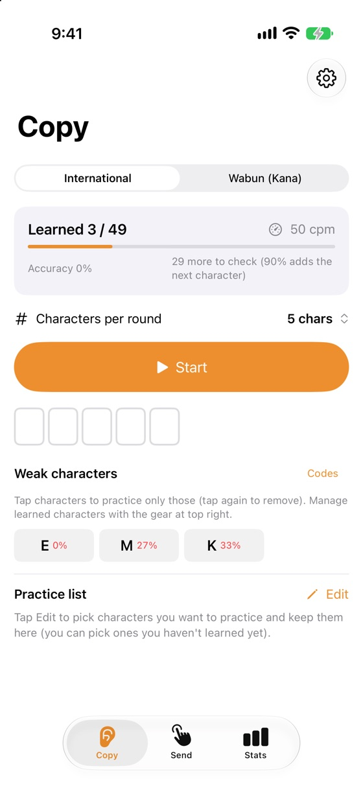
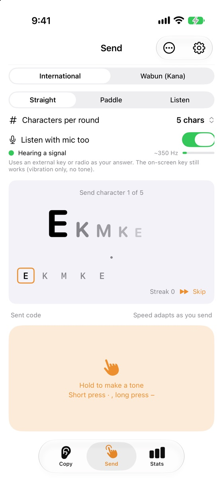
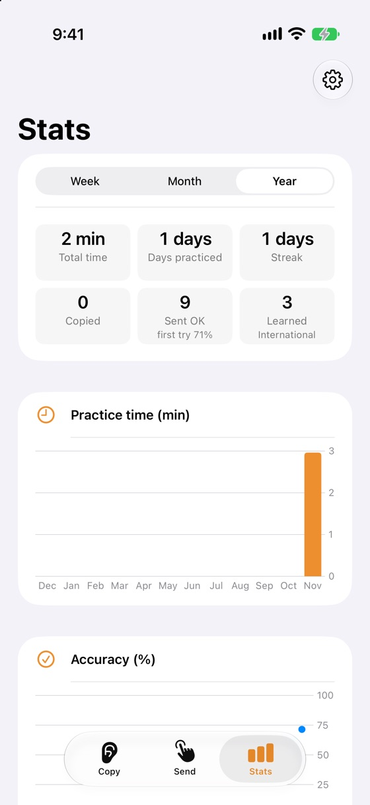

FEATURES
Features
Copy (Koch method)
Start with 2 characters and add one each time you pass 90%. Farnsworth spacing keeps characters fast while you learn.
Type while you listen
Answer with the keyboard as it plays, then check. Or just listen.
Send (straight key, paddle)
The screen becomes a key. The straight key adapts to your sending speed automatically.
Listen (Plus)
Decode Morse around you with the microphone, and use an external key or radio to answer sending drills.
SCREENS
Screens



PRICE
Pricing
Free
Free
- Copy and send practice
- 1–100 characters per round, weak-character drills
- Koch or ABC order
Plus
One-time purchase
- Decode with the microphone
- Stats charts and accuracy by character
- No ads
If you installed the app by December 13, 2026, everything is free for you, forever (no ads either).
FAQ
FAQ
Which code tables does the app use?
International Morse follows ITU-R Recommendation M.1677-1 “International Morse code”. See Settings > Code sources in the app.
Can I decode radio signals?
Yes, but Article 17 of the ITU Radio Regulations asks every country to protect the secrecy of radio communications. Most countries prohibit divulging or using the contents of messages not meant for you (in the United States, 47 U.S.C. § 605, which does not apply to amateur radio transmissions). Please follow the law where you are.
Is the microphone audio recorded?
No. Sound is used only on your iPhone to decode Morse code. Nothing is recorded or sent.
SUPPORT
Support
For bugs, requests or questions, please send an email.
It helps if you include your iPhone model, iOS version and the app version (the version at the bottom of Settings).